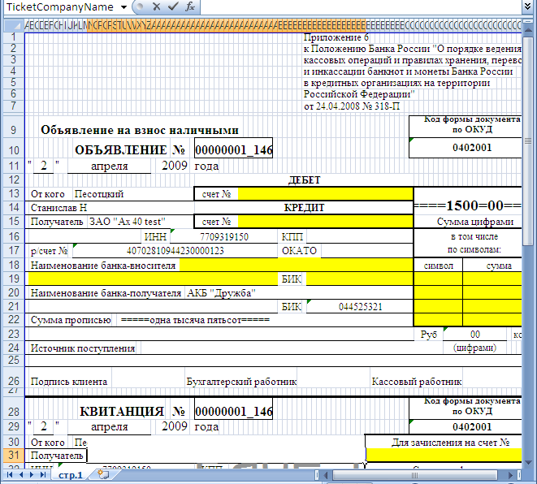
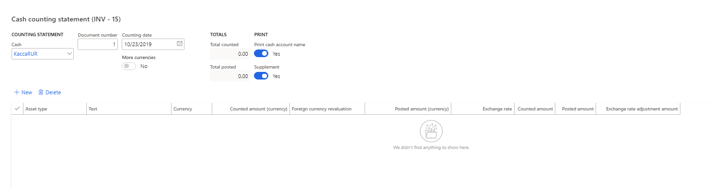
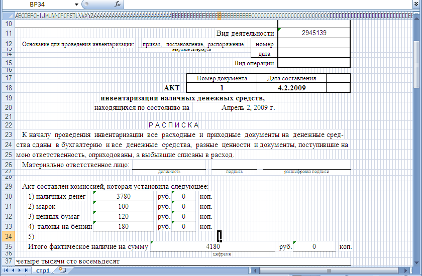

Cash - Local primary forms and unified reports
Several reports about cash transactions are available in companies that have Russian context.
The Petty cash for Eastern Europe and Russia topic provides information about the following reports:
- Slip journal
- Cash book report
- Cash – Ledger reconciliation
- Cash statement report
- Cash transactions report
- Journal of registration of documents report
This topic provides information about following additional reports:
- Cash due announcement
- Cash counting statement (INV-15)
Preliminary setup
Set up a number sequence
- Go to Cash and bank management > Setup > Cash and bank management parameters.
- On the Number sequences tab, in the Number sequence code field for the Cash due announcement reference, select a number sequence code.
Set up a bank transaction type to allow for a Cash due announcement report
- Go to Cash and bank management > Setup > Bank transaction types.
- In the row for the transaction type, select the Allow cash due announcement check box so that a Cash due announcement report can be generated and printed for vouchers that use that transaction type.
Cash due announcement report
The Cash due announcement report is used to send petty cash to the bank.
You can print a Cash due announcement report from either the General journals page or the Slip journal page.
Generate and print a Cash due announcement report from the General journals page
Go to General ledger > Journal entries > General journals.
Select a journal, and then, on the Action Pane, select Lines.
Create a line for sending petty cash to the bank. Select a bank account in either the Account field or the Offset account field.
On the Payment tab, in the Bank transaction type field, select the transaction type that you selected the Allow cash due announcement check box for earlier in this topic.
On the Action Pane, select Print > Cash due announcement to generate and print the report. The report is generated as a Microsoft Excel document that uses the template for form 0402001.

On the line that you created, the Cash due announcement field is set and can't edited.
On the Action Pane, select Functions > Cancel cash due announcement to cancel the document that was generated for the line. The field that contains a link to the document is cleared, and the line becomes editable.
Generate and print a Cash due announcement report from the Slip journal page
- Go to Cash and bank management > Cash transactions > Slip journal.
- Create a slip journal line for sending petty cash to the bank, and then approve it.
- To print the Cash due announcement report, use the same steps that you used to print the report from the General journals page.
View and reprint a Cash due announcement report
Go to Cash and bank management > Inquiries and reports > Cash due announcement.
The Cash due announcement journal page shows all the Cash due announcement reports that have been generated. Select a document, and then, on the Action Pane, select one of the following buttons:
- Journal – Open the journal where you generated the document.
- Print – Print the document.
- Cancel – Cancel the document.
Note
On the Bank accounts page, you can view and reprint Cash due announcement reports that were generated for a specific bank account. On the Action Pane, on the Manage payments tab, in the Related information group, select Cash due announcement to open the Cash due announcement journal page.
Cash counting statement (INV-15) report
The Cash counting statement (INV-15) report is used for the cash counting act. You might want to generate and print the inventory counting act in the following situations:
- A single petty cash account includes different currencies.
- A single cash account includes different asset types, such as Cash, Stamps, or Securities.
Before you generate the cash counting act, calculate the exchange rate adjustment. Then follow these steps.
Go to Cash and bank management > Inquiries and reports > Cash reports > Cash counting statement report.
In the upper part of the Cash counting statement (INV – 15) page, follow these steps:
a. In the Cash field, select the cash account to count.
b. In the Document number field, specify the number of the document that the inventory that is done should be based on.
c. In the Counting date field, specify the date of counting.
d. Set the Print cash account name option to Yes.
e. Set the Supplement option to Yes to create the supplement to the counting act.
If the cash account allows for accounting in different currencies, the More currencies option is set to Yes.
The lower part of the page shows the lines where calculated data about cash is available. You can also manually create lines. This part of the page includes the following fields:
- Asset type – By default, this field is set to Cash. To add a line that uses a different asset type, select New. When you create a new line, you can select one of the following values: Cash, Stamps, Securities, or Other.
- Text – Specify the asset type. This field is available only if you select Other in the Asset type field.
- Currency – The currency for the selected asset type.
- Counted amount (currency) – The balance of the specified asset type in the specified currency. You can edit this field.
- Posted amount (currency) – Enter the posted amount, based on the results of the inventory.
- Exchange rate – The exchange rate of the specified currency on the counting date.
- Counted amount – The balance of the specified asset type in the company's primary currency.
- Posted amount – The amount that is specified in the Posted amount (currency) field, in the company's primary currency.
- Exchange rate adjustment amount – If the exchange rate adjustments for the specified currency were calculated on the date of inventory, this field is flagged. For the primary currency, the Exchange rate adjustment amount field is always flagged.

Select OK to generate the cash counting act.
